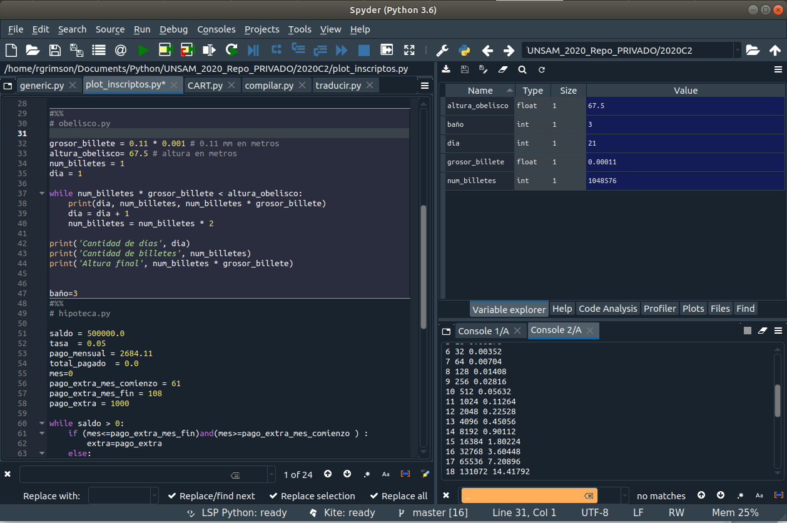

Contenidos | Anterior (3 Contadores del módulo collections) | Próximo (5 Impresión con formato)
3.4 Entorno de desarrollo integrado
A partir de aquí te vamos a proponer trabajar principalmente dentro de un entorno de desarrollo integrado (IDE, por sus siglas en inglés).
En particular, sugerimos trabajar con el Spyder que es un entorno de desarrollo de Python diseñado para científicos, ingenieros y analistas de datos. El Spyder puede descargarse solo o como parte de la distribución de Anaconda que trae, además de Python y del Spyder, una serie de bibliotecas con módulos muy útiles para desarrollos relacionados a la ciencia de datos.
Esta es una imagen de una captura de pantalla del Spyder: 
En la captura se puede ver que por defecto el Spyder viene estructurado con tres ventanas. Un editor de código ocupa la mitad izquierda de la ventana, mientras que la mitad derecha se divide en una terminal (o consola) interactiva de Python en la mitad inferior y un inspector de variables en la mitad superior. El Spyder nos permite correr línea por línea el código del editor (tecla F9) y ver el estado de las variables en el inspector de variables, o ejecutarlo completo (tecla F5). También nos permite debuguear el código con facilidad (botones azules de la barra superior).
Les recomendamos que le dediquen un tiempo a probar sus últimos ejercicios en este entorno. Verán que es muy cómodo. Pueden mirar un breve tutorial donde no sólo les enseñan el uso de la tecla F5, sino también una introducción al uso del debugger (le dice depurador) que veremos más adelante en este curso.
Contenidos | Anterior (3 Contadores del módulo collections) | Próximo (5 Impresión con formato)